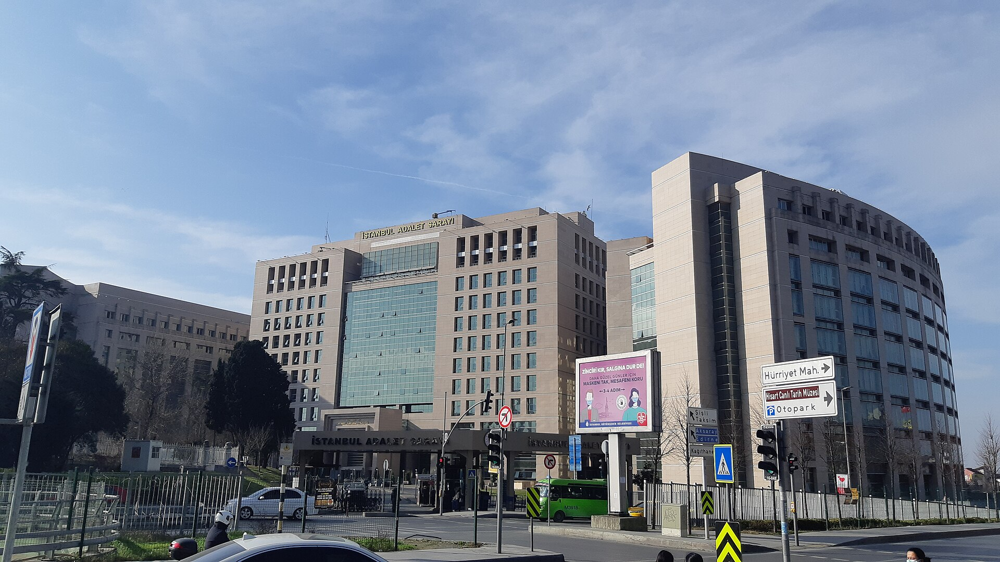

Istanbulda ikki o‘zbek ayolini o‘ldirgan shaxslarga ikki martadan og‘irlashtirilgan umrbod qamoq hukmi chiqarildi
Istanbul Anadolu 17-og‘ir jinoyatlar sudi Dilshod Turdimurotov va G‘ofurjon Kamolxo‘jayevni Durdona Hakimova hamda Sayyora Ergashaliyevani o‘ldirishda aybdor deb topdi. Ish yanvar oyida Shishli tumanidagi chiqindi konteyneridan topilgan jasad bilan boshlangan edi.

Istanbul Anadolu 17-og‘ir jinoyatlar sudi ikki O‘zbekiston fuqarosini ikki o‘zbek ayolini o‘ldirishda aybdor deb topdi. Sud 31 yoshli Dilshod Turdimurotov va 29 yoshli G‘ofurjon Kamolxo‘jayevga har biriga ikki martadan og‘irlashtirilgan umrbod qamoq jazosini tayinladi. Og‘irlashtirilgan umrbod qamoq — Turkiya jinoyat qonunchiligidagi eng og‘ir jazo bo‘lib, u oddiy umrbod qamoqqa nisbatan qattiqroq saqlash sharoitlarini nazarda tutadi va shartli ozod qilish imkoniyatini deyarli istisno qiladi.
Bundan tashqari har ikkala sudlanuvchiga o‘ldirilganlardan keyin uy-joydan mol-mulk o‘g‘irlashda ayblanib, ikki martadan yetti yillik qamoq jazosi ham qo‘shimcha tayinlandi. Hukm sentabr oyining ikkinchi haftasida e’lon qilindi.
Qurbonlar
Jabrlanuvchilar — 36 yoshli Durdona Hakimova va 32 yoshli Sayyora Ergashaliyeva. Har ikkalasi O‘zbekiston fuqarosi bo‘lib, Istanbulda yashab kelgan. Ish 24-yanvar kuni Durdona Hakimovaning jasadi Istanbulning Shishli tumanidagi chiqindi konteyneridan topilishi bilan boshlangan edi. Ikkinchi jabrlanuvchi — Sayyora Ergashaliyeva keyinroq, 6-fevral kuni qarindoshlari bergan ariza asosida aniqlangan.
Tergov qanday olib borildi
Prokuratura ma’lumotiga ko‘ra, xavfsizlik kameralari yozuvlarida 23-yanvar kuni ikki ayolning Istanbulning Umraniya tumanidagi uyga kirgani, ulardan keyin esa ikki erkakning shu uyga kirgani qayd etilgan. Keyinchalik sudlanuvchilarning uydan bir necha marta qora chiqindi xaltalari bilan chiqib ketgani, so‘ngra oq chamadon olib chiqqani tasvirga tushgan.
Prokuratura xulosasiga ko‘ra, har ikkala ayol shu uyda o‘ldirilgan, jasadlar esa Istanbulning turli hududlaridagi chiqindi konteynerlariga tashlangan. Gumonlanuvchilar Istanbul aeroportida Turkiyani tark etishga urinayotgan paytda qo‘lga olingan.
Sudlanuvchilarning bayonotlari
G‘ofurjon Kamolxo‘jayev sud majlisida Sayyora Ergashaliyeva bilan diniy nikohda bo‘lganini va uni xiyonat sababli o‘ldirganini aytdi; u Durdona Hakimovaning o‘ldirilishida ishtirok etganini rad etdi. Dilshod Turdimurotov esa Durdona Hakimovani o‘ldirganini tan oldi va o‘ziga nisbatan eng og‘ir jazo qo‘llanishi kerakligini bildirdi.
Raqamlarda
- Sudlanuvchilar: Dilshod Turdimurotov (31), G‘ofurjon Kamolxo‘jayev (29)
- Jabrlanuvchilar: Durdona Hakimova (36), Sayyora Ergashaliyeva (32)
- Hukm: har biriga 2 martadan og‘irlashtirilgan umrbod qamoq
- Qo‘shimcha jazo: o‘g‘rilik uchun 2 martadan 7 yil
- Birinchi jasad topilgan sana: 24-yanvar
- Ikkinchi jabrlanuvchi aniqlangan sana: 6-fevral
- Sud: Istanbul Anadolu 17-og‘ir jinoyatlar sudi
Jamoatchilik reaksiyasi
Ish Istanbul va Anqarada namoyishlarga sabab bo‘ldi. Ayollar huquqlarini himoya qiluvchi tashkilotlar migrant ayollarning zo‘ravonlikka nisbatan himoyasizligi masalasini ko‘tardi. Namoyishchilar migrant ayollarning huquqiy maqomi, til to‘sig‘i va politsiyaga murojaat qilishdagi qiyinchiliklari ularni qo‘shimcha xavf ostiga qo‘yishini qayd etdi.
Kontekst: Turkiyadagi o‘zbek jamoasi
Turkiya so‘nggi o‘n yillikda O‘zbekiston fuqarolari uchun asosiy mehnat migratsiyasi va ta’lim yo‘nalishlaridan biriga aylandi. Rasmiy va norasmiy baholarga ko‘ra, mamlakatda yuz minglab o‘zbekistonlik yashaydi va ishlaydi; ularning muhim qismi to‘qimachilik, qurilish, savdo va xizmat ko‘rsatish sohalarida band.
Migrant maqomidagi shaxslar uchun huquqiy himoya masalasi bir necha yildan buyon muhokama qilinadi. Norasmiy bandlik, ijara shartnomasisiz yashash va ro‘yxatdan o‘tmagan nikohlar jabrlanuvchilarning huquqiy holatini murakkablashtiradi hamda jinoyat sodir etilgan taqdirda tergovni qiyinlashtiradi.
Mintaqaviy manzara
O‘zbek ayollarining chet elda zo‘ravonlikdan jabr ko‘rishi masalasi 2026-yil davomida bir necha bor xalqaro nashrlarda yoritildi. Mart oyida “The Diplomat” nashri chet eldagi o‘zbek ayollariga nisbatan zo‘ravonlik mavzusiga alohida material bag‘ishlagan edi.
Mehnat migratsiyasi yo‘nalishlari o‘zgarishi bilan bu masala yangi geografiyaga ham tarqalmoqda. Sentabr oyi boshida O‘zbekiston Migratsiya agentligi 25-avgust–5-sentabr oralig‘ida Rossiyadan 96 415 fuqaro qaytganini ma’lum qilgan; shu bilan birga Turkiya, Janubiy Koreya va Yevropa yo‘nalishlaridagi migratsiya oqimi ortmoqda.
Huquqiy jihat
Turkiyada 2004-yilda o‘lim jazosi bekor qilingan; og‘irlashtirilgan umrbod qamoq eng yuqori jazo chorasi hisoblanadi. Bu jazo turida mahkumlar alohida rejimda saqlanadi, uchrashuvlar va sayr qilish vaqti cheklanadi.
Ish qanday ochilgan edi
Ish 24-yanvar kuni Durdona Hakimovaning jasadi Istanbulning Shishli tumanidagi chiqindi konteyneridan topilishi bilan boshlangan. Politsiya xavfsizlik kameralari yozuvlarini tekshirib, 23-yanvar kuni ayolning Umraniya tumanidagi uyga kirgani va undan keyin ikki erkak shu uyga kirgani aniqlandi.
Yozuvlarda sudlanuvchilarning uydan bir necha marta qora chiqindi xaltalari bilan chiqib ketgani, so‘ngra oq chamadon olib chiqqani qayd etilgan. Gumonlanuvchilar Istanbul aeroportida Turkiyani tark etishga urinayotgan paytda qo‘lga olindi.
Ikkinchi jabrlanuvchi — Sayyora Ergashaliyeva 6-fevral kuni qarindoshlari bergan ariza asosida aniqlandi. Prokuratura xulosasiga ko‘ra, har ikkala ayol shu uyda o‘ldirilgan va jasadlar Istanbulning turli hududlaridagi chiqindi konteynerlariga tashlangan.
Turkiyadagi jazo tizimi
Turkiyada o‘lim jazosi 2004-yilda to‘liq bekor qilingan. Hozirda eng og‘ir jazo chorasi — og‘irlashtirilgan umrbod qamoq. Bu jazo turida mahkumlar alohida rejimda saqlanadi: uchrashuvlar, sayr qilish vaqti va boshqa huquqlar cheklanadi.
Og‘irlashtirilgan umrbod qamoq odatda oldindan rejalashtirilgan qotillik, bir necha kishini o‘ldirish yoki alohida shafqatsizlik bilan sodir etilgan jinoyatlar uchun tayinlanadi. Sud har ikkala sudlanuvchiga ikki martadan shu jazoni belgiladi — ya’ni har bir jabrlanuvchi uchun alohida.
Bundan tashqari sudlanuvchilarga uy-joydan mol-mulk o‘g‘irlashda ayblanib, ikki martadan yetti yillik qamoq jazosi ham qo‘shimcha tayinlandi. Hukm ustidan apellyatsiya tartibida shikoyat berilishi mumkin.
Migrant ayollar masalasi
Ish Istanbul va Anqarada namoyishlarga sabab bo‘ldi. Ayollar huquqlarini himoya qiluvchi tashkilotlar migrant ayollarning zo‘ravonlikka nisbatan himoyasizligi masalasini ko‘tardi.
Namoyishchilar migrant ayollarning huquqiy maqomi, til to‘sig‘i va politsiyaga murojaat qilishdagi qiyinchiliklari ularni qo‘shimcha xavf ostiga qo‘yishini qayd etdi. Norasmiy bandlik, ijara shartnomasisiz yashash va ro‘yxatdan o‘tmagan nikohlar jabrlanuvchilarning huquqiy holatini murakkablashtiradi.
Sudlanuvchilardan biri jabrlanuvchi bilan diniy nikohda bo‘lganini aytdi. Bunday nikohlar Turkiya qonunchiligida rasmiy maqomga ega emas va rasmiy ro‘yxatga olinmaydi.
Turkiyadagi o‘zbek jamoasi
Turkiya so‘nggi o‘n yillikda O‘zbekiston fuqarolari uchun asosiy mehnat migratsiyasi va ta’lim yo‘nalishlaridan biriga aylandi. Baholarga ko‘ra, mamlakatda yuz minglab o‘zbekistonlik yashaydi va ishlaydi; ularning muhim qismi to‘qimachilik, qurilish, savdo va xizmat ko‘rsatish sohalarida band.
Ikki davlat o‘rtasida vizasiz rejim amal qiladi; bu Turkiyani migratsiya yo‘nalishi sifatida jozibador qiladi. Shu bilan birga uzoq muddat qolish uchun yashash ruxsatnomasi talab qilinadi va uni rasmiylashtirmaganlar norasmiy maqomda qoladi.
Mehnat migratsiyasi yo‘nalishlari o‘zgarmoqda: sentabr oyi boshida O‘zbekiston Migratsiya agentligi o‘n kun ichida Rossiyadan 96 415 fuqaro qaytganini ma’lum qilgan edi. Ayni paytda Turkiya, Janubiy Koreya va Yevropa yo‘nalishlaridagi oqim ortmoqda.
O‘zbekiston Tashqi ishlar vazirligi va Istanbuldagi bosh konsullik ish yuzasidan rasmiy bayonot bergani haqida ma’lumot mavjud emas.
Sud hukmi ustidan apellyatsiya tartibida shikoyat berilishi mumkin. Sudlanuvchilar tomonidan shikoyat berilgani yoki berilmagani haqida ma’lumot e’lon qilinmagan.
O‘zbekiston tashqi ishlar vazirligi va Istanbuldagi bosh konsullik ish yuzasidan rasmiy bayonot bergani haqida ma’lumot mavjud emas.